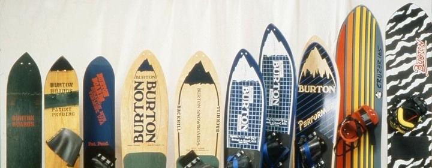
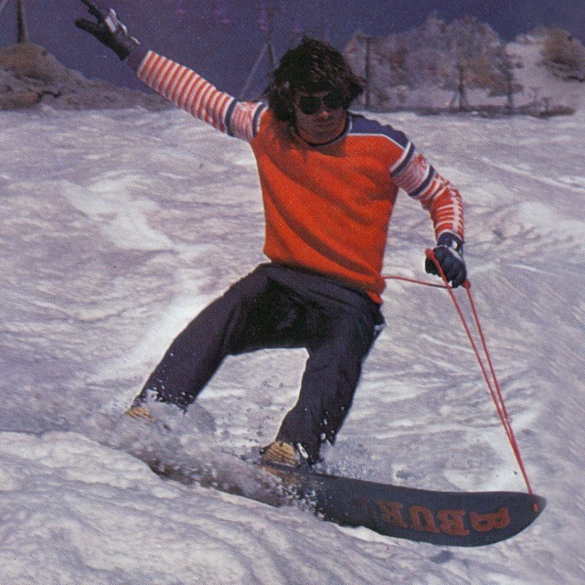

Snowboarding Throughout History
Snowboarding's origin is an exciting and interesting history. This page will recount it's history and how it has evolved from a niche winter sport into a global phenomenon.

Early Beginnings:
Ancient Snow Rides: The concept of sliding on snow can be traced back thousands of years. Cultures in regions with heavy snowfall, such as the Inuit and the people of Scandinavia, used sled-like devices to travel across snow-covered landscapes. These early forms of snow travel are considered the ancestors of modern snowboarding.
The 1920s-1930s:
The idea of strapping one's feet to a board to slide down snow-covered hills began to take form in the early 20th century. In 1929, Sherman Poppen created the "snurfer," a toy for his daughter that resembled a snowboard but without bindings. This marked the first real precursor to modern snowboarding.
The Birth of Modern Snowboarding (1960s-1970s): 1960s:
In the 1960s, surfing culture began influencing snowboarding. Early enthusiasts like Tom Sims and Jake Burton Carpenter started experimenting with designs that would resemble the modern snowboard. Burton is particularly famous for creating the first commercially viable snowboard in the mid-1970s.
1970s: Jake Burton's company (Burton Snowboards) was founded in 1977 and became a pioneer in making snowboards more functional. Burton's innovations, like adding bindings to the board, made the sport more accessible and paved the way for it to evolve.
The Rise of Snowboarding (1980s-1990s):
1980s: Snowboarding began gaining popularity in the 1980s, particularly in the United States. Ski resorts started to open their slopes to snowboarders, although there were initial controversies and resistance from ski communities. The First Competitions: Snowboarding competitions were held in the mid-1980s, with events like the National Snowboard Championships beginning to take shape.
1990s: Snowboarding hit the mainstream, with brands like Burton, Mervin Manufacturing, and others driving innovation and style. This period saw The first snowboarding-specific resorts and terrain parks being built. The Winter Olympics: Snowboarding made its Olympic debut in 1998 at the Nagano Winter Games, with events like halfpipe and giant slalom officially entering the competition.